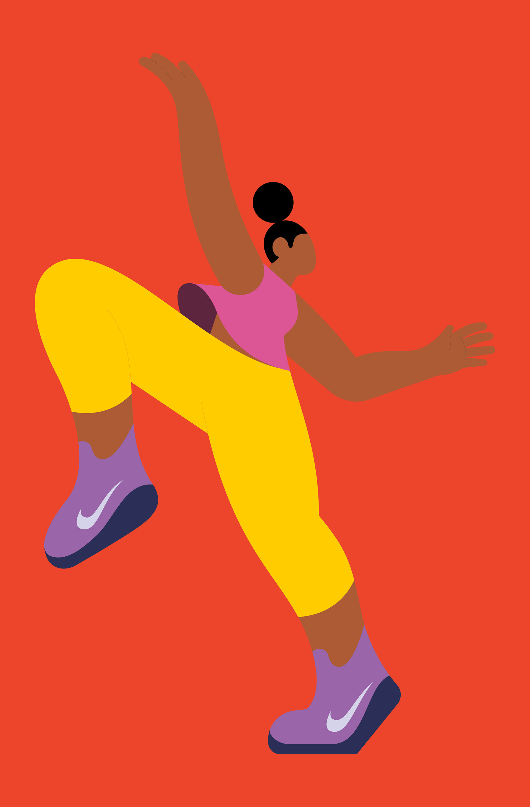

LINN FRITZ
L'illustratrice, designer e animatrice svedese Linn Fritz vive e lavora a Londra, dove crea immagini affascinanti, pulite e precise in una tavolozza pastello per una vasta gamma di clienti editoriali e commerciali.



L'illustratrice, designer e animatrice svedese Linn Fritz vive e lavora a Londra, dove crea immagini affascinanti, pulite e precise in una tavolozza pastello per una vasta gamma di clienti editoriali e commerciali.